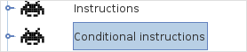
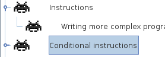

Programas são principalmente conjuntos de chamadas de métodos, que são nada mais que listas de ordens simples dadas à máquina. É muito semelhante a uma receita dizendo Derreta os pedaços de chocolate, adicione açucar, mexa e sirva. Em seus programas, tais instruções são chamadas funções ou métodos, e você deve acrescentar parêntesis para invocá-las:
nomeDoMétodo()
[!thelang] precisa das instruções separadas por ponto-e-vírgula (;)[!python|scala] ou por quebra de linhas[/!]. O exemplo anterior poderia ter sido escrito da seguinte forma[!python|scala] (você também pode adicionar ponto-e-vírgula no final das linhas, mas isto não é obrigatório)[/!].
meltTheChocolatePieces()[!java|c];[/!] addSugar()[!java|c];[/!] coolMix()[!java|c];[/!] serve()[!java|c];[/!][!python|scala]
Também pode ser escrito da seguinte forma, mas geralmente isto é considerado como uma prática ruim para agrupar várias instruções na mesma linha já que prejudica muito a legibilidade.
derretaOsPedaçosDeChocolate(); adicioneAçucar(); mexa(); sirva()[/!]
Of course, these specific methods do not exist by default in [!thelang], but it may be possible to define them by yourself (we'll see later how to define your how methods).
Por enquanto, vamos ficar apenas com as instruções do buggle. Existe um método para cada botão do painel de controle interativo. Para alcançar o mesmo efeito que o botão avançar (fazendo o buggle avançar um passo), você precisa escrever o seguinte no editor:
[!java|scala|python]forward()[!java];[/!][/!][!c]stepForward();[/!]
Likewise, to achieve the same effect than the [!java|scala|python]backward[/!][!c]stepBackward[/!], left and right buttons, you need to use respectively:
backward()[!java|c];[/!] left()[!java|c];[/!] right()[!java|c];[/!]
O botão mark é diferente, pois corresponde a dois métodos: o primeiro move a caneta para cima e o segundo move a caneta para baixo.
brushUp()[!java|c];[/!] brushDown()[!java|c];[/!]
O buggle tem outros métodos, que estão no menu "Ajuda/sobre este mundo" e serão introduzidos quando forem necessários.
Quando for para o próximo exercício, observe que existe um sub-exercício depois deste. Por padrão, ele fica escondido no menu e você tem que abrir o sub-menu para vê-lo. Quando você troca de exercício, a maioria dos exercícios fica escondida por que a árvore está recolhida, como segue:
Você tem que clicar no pequeno símbolo a esquerda do buggle para expandir a árvore, como segue:
